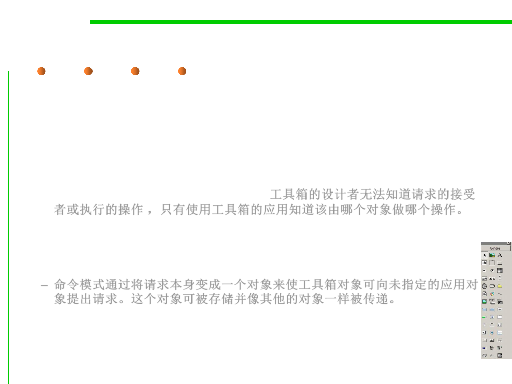

Command Pattern
6.2 Design Patterns for Maintainability
▪ Motivation
– For example, user interface toolkits include objects like buttons and menus
that carry out a request in response to user input. But the toolkit can‘t
implement the request explicitly in the button or menu, because only
applications that use the toolkit know what should be done on which object.
As toolkit designers we have no way of knowing the receiver of the request
or the operations that will carry it out.工具箱的设计者无法知道请求的接受
者或执行的操作 ，只有使用工具箱的应用知道该由哪个对象做哪个操作。
– The Command pattern lets toolkit objects make requests of unspecified
application objects by turning the request itself into an object. This object
can be stored and passed around like other objects.
– 命令模式通过将请求本身变成一个对象来使工具箱对象可向未指定的应用对
象提出请求。这个对象可被存储并像其他的对象一样被传递。